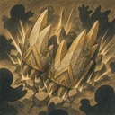

Подземный штурм
Зарывается в землю, снимая с себя все ослабления, и со скоростью передвижения, усиленной на 200%, перемещается на свободную клетку, вокруг которой в пределах 1 кл. больше всего врагов. Затем наносит всем врагам в пределах 1 кл. от себя физический урон в размере 500% силы умений. Под землёй неуязвим для атак.